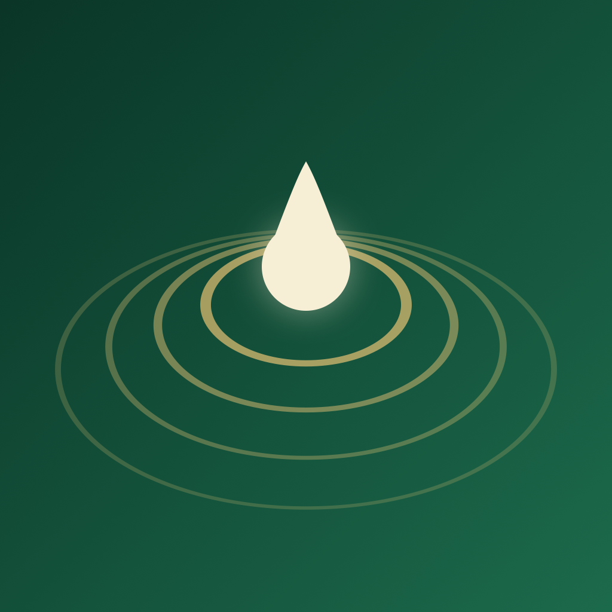

تطبيق أثر
آخر تحديث: ٣ سبتمبر ٢٠٢٦
الخلاصة: تطبيق «أثر» لا يجمع أي بيانات شخصية، ولا ينشئ حسابات، ولا نملك أي خادم. كل ما تفعله داخل التطبيق يبقى على جهازك وحده. لا يتّصل التطبيق بالشبكة من تلقاء نفسه؛ اتصالان اختياريان فقط يقعان بفعلك: طلب إلى Apple لتحويل إحداثياتك إلى اسم مدينة إن فعّلت الموقع، وجلب ملفات التلاوة الصوتية من موقع MP3Quran.net حين تضغط «تشغيل» أو «تنزيل» في قسم التلاوة.
لا شيء. لا نجمع، ولا نخزّن على خوادمنا، ولا نشارك، ولا نبيع أي معلومات عنك. لا يوجد في التطبيق تسجيل دخول، ولا حسابات، ولا نماذج تجمع بياناتك، ولا أدوات تحليلات (Analytics)، ولا أدوات تتبّع، ولا إعلانات، ولا حزم برمجية تابعة لجهات خارجية.
يحفظ التطبيق المعلومات التالية محليًا على جهازك فقط، ولا تغادره أبدًا:
| البيان | الغرض | أين يُحفظ |
|---|---|---|
| عدد الأذكار وأيام التتابع | عرض إحصائياتك وتشجيعك على المداومة | جهازك |
| عدّاد المسبحة | حفظ عدّك بين الجلسات | جهازك |
| الأذكار التي أتممتها اليوم | تمييز ما أنجزته | جهازك |
| مدينتك أو إحداثياتك | حساب أوقات الصلاة | جهازك |
| تفضيلاتك (حجم الخط، الاهتزاز، أوقات التذكير، طريقة الحساب) | ضبط التطبيق كما تحب | جهازك |
عند حذف التطبيق، تُحذف هذه البيانات كلها من جهازك. ويمكنك أيضًا تصفيرها في أي وقت من الإعدادات ← إحصائياتي ← تصفير الإحصائيات.
يطلب التطبيق إذن الوصول للموقع عند الاستخدام فقط، ولغرض واحد: حساب أوقات الصلاة في مكانك.
استثناء واحد يجب أن تعرفه: إذا فعّلت الموقع، يمرّر التطبيق إحداثياتك إلى
خدمة CLGeocoder من Apple ليحصل على اسم مدينتك للعرض فقط.
هذه الخدمة تعمل عبر خوادم Apple لا على جهازك، أي أن الإحداثيات تغادر الجهاز في هذه الحالة —
إلى Apple وحدها، وتخضع لسياسة خصوصية Apple.
نحن لا نرى شيئًا من ذلك ولا نملك أي خادم يستقبله. وإن لم تفعّل الموقع، لا يحدث هذا الطلب أصلًا،
وحساب أوقات الصلاة نفسه يجري على جهازك في الحالتين.
تذكير الأذكار وتنبيه أوقات الصلاة إشعارات محلية يجدولها جهازك بنفسه. لا نستخدم إشعارات الدفع (Push Notifications)، ولا خوادم إشعارات، ولا نملك أي رمز تعريف (Token) خاص بجهازك. يمكنك إيقافها من داخل التطبيق أو من إعدادات الجهاز.
لا يحتاج التطبيق إلى اتصال بالإنترنت ليعمل. الأذكار ونصّ المصحف وأصوات الأذان مضمّنة داخل التطبيق، وأوقات الصلاة تُحسب رياضيًا على الجهاز. طلبان شبكيان فقط يمكن أن يقعا، وكلاهما بفعلك:
الروابط الوحيدة الخارجية هي روابط تفتحها أنت بنفسك (سياسة الخصوصية وصفحة الدعم)، وخاصية «المشاركة» التي تستخدم قائمة المشاركة في iOS — وأنت من يختار التطبيق والوجهة.
التطبيق مناسب لجميع الأعمار ولا يجمع أي بيانات من أي مستخدم، بما في ذلك من هم دون الثالثة عشرة. ولا يحتوي على أي محتوى موجّه أو إعلانات.
التطبيق مجاني بالكامل: لا مشتريات داخلية، ولا اشتراكات، ولا نسخة مدفوعة. لا نطلب بيانات دفع ولا نمتلك أي وسيلة لتحصيل أموال.
بما أننا لا نجمع أي بيانات، فلا توجد لدينا بيانات عنك لتطلب الاطلاع عليها أو تصحيحها أو حذفها. بياناتك كلها بين يديك على جهازك، وتُمحى بحذف التطبيق. وهذا يجعل التطبيق متوافقًا بطبيعته مع أنظمة حماية البيانات مثل نظام حماية البيانات الشخصية السعودي (PDPL) واللائحة الأوروبية (GDPR) وقانون كاليفورنيا (CCPA).
إن تغيّر شيء، سنحدّث هذه الصفحة ونغيّر تاريخ «آخر تحديث» أعلاه. وإن أضفنا مستقبلًا أي ميزة تتطلب بيانات، سنوضّحها هنا قبل إطلاقها.
لأي سؤال عن الخصوصية أو عن التطبيق: افتح موضوعًا على GitHub، أو راسلنا على bip@outlook.sa.
Last updated: 3 September 2026
In short: Athar collects no personal data, has no accounts, and we run no servers of our own. Everything you do stays on your device. The app never contacts the network on its own; only two optional requests can happen, both triggered by you: an Apple lookup to turn your coordinates into a city name if you enable location, and fetching a Quran recitation file from MP3Quran.net when you tap Play or Download in the Recitation section.
None. We do not collect, store on our servers, share, or sell any information about you. The app has no sign-in, no accounts, no analytics, no tracking, no advertising, and no third-party SDKs.
The app saves the following locally on your device only: your dhikr counts and daily streak, tasbih counter, which adhkar you completed today, your chosen city or coordinates, and your preferences (font size, haptics, reminder times, calculation method). None of it leaves your device. Deleting the app deletes all of it.
Athar requests While Using the App location access for one purpose: computing prayer times where you are. It is entirely optional — you can decline and pick your city from a list instead, with no loss of functionality. The prayer-time calculation itself runs entirely on your device.
One exception you should know about: if you enable location, the app passes your coordinates to Apple's CLGeocoder to obtain your city's name for display. That service runs on Apple's servers, not on your device, so in this one case the coordinates do leave the device — to Apple only, governed by Apple's privacy policy. We never see it and we operate no server that could receive it. Decline location and this request never happens.
Adhkar reminders and prayer-time alerts are local notifications scheduled by your own device. We use no push notifications, no notification servers, and hold no device token.
The app does not require an internet connection. Adhkar, the Quran text and the adhan sounds are bundled in the app, and all prayer times are computed on device. Only two network requests can occur, both initiated by you:
Athar is suitable for all ages, contains no ads, and collects no data from anyone, including children under 13.
Athar is completely free: no in-app purchases, no subscriptions, no paid tier. We never ask for payment details.
Because we collect nothing, we hold no data about you to access, correct, or delete. Your data lives on your device and is erased when you delete the app. This makes the app inherently compliant with PDPL, GDPR, and CCPA.
If anything changes, we will update this page and its "last updated" date.
Questions? Open an issue on GitHub or email bip@outlook.sa.